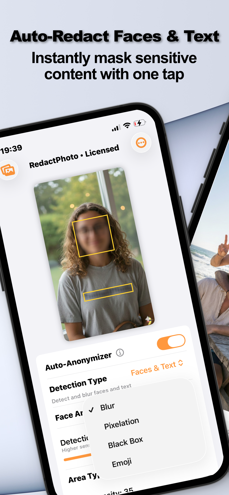

Pixelation is the censor bar's friendlier cousin — the broadcast-TV mosaic that says “deliberately hidden” without the visual weight of a black rectangle. It's the style of choice when you want the redaction to be obvious but the photo to stay a photo.
The Broadcast Look
Blur can read as accidental — a focus mistake, a smudge. Pixelation never does: the hard mosaic grid signals intent, which is exactly what you want for masked strangers in street shots, plates in listings, or bystanders in event photos. Where the audience should know something was hidden, pixelation communicates it cleanly.
Pixelate a Region (Step by Step)
- Open the photo in Redact PhotoAs always: processed on-device, never uploaded.
- Select what to pixelateAuto-detect faces or text and let the AI find the regions — or draw a manual rectangle or circle with zoom for anything else (backgrounds, objects, plates).
- Choose the Pixelation stylePick Pixelation from the style options (alongside Blur, Black Box, and Emoji). It applies to every selected region.
- Export the flattened copySave as PNG, JPG, or PDF — the mosaic is baked into the pixels, not layered on top.

Pixelation and Actual Secrecy
One honest caveat: for text, coarse pixelation has been reversed by researchers using tools built for exactly that. Faces are far less recoverable than text, but if the region contains information — numbers, names — prefer the black box. The evidence and the decision rule are in can blurred text be recovered?
Mixing Styles in One Photo
Nothing forces one style per image: pixelate the bystanders, black-box the paperwork on the desk, emoji the friend who's in on the joke. Region-by-region control is the point of manual + auto selection.
Try it on your own photos
Redact Photo is free to download with a fully unlocked 3-day free trial — mask your first photo in the next two minutes, without it leaving your phone.
Get Redact Photo on the App Store